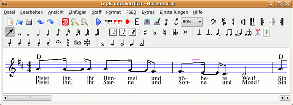
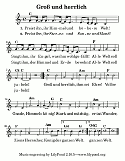

Noteedit
Archivierte Anleitung
Dieser Artikel wurde archiviert, da er - oder Teile daraus - nur noch unter einer älteren Ubuntu-Version nutzbar ist. Diese Anleitung wird vom Wiki-Team weder auf Richtigkeit überprüft noch anderweitig gepflegt. Zusätzlich wurde der Artikel für weitere Änderungen gesperrt.
Zum Verständnis dieses Artikels sind folgende Seiten hilfreich:
Noteedit  ist ein "What you see is what you get"- bzw. "What you see is what you mean"-Editor (wie z.B. LyX). Ähnlich wie das unter Musikern sehr bekannte Programm Capella ist es auch unter Noteedit möglich, komplette Notensätze mit Maus oder Tastatur zu schreiben bzw. über eine MIDI-Gerät einzulesen. Auch eine MIDI-Ausgabe ist möglich.
ist ein "What you see is what you get"- bzw. "What you see is what you mean"-Editor (wie z.B. LyX). Ähnlich wie das unter Musikern sehr bekannte Programm Capella ist es auch unter Noteedit möglich, komplette Notensätze mit Maus oder Tastatur zu schreiben bzw. über eine MIDI-Gerät einzulesen. Auch eine MIDI-Ausgabe ist möglich.
Diese Beschreibung richtet sich an Personen, die Notensätze erstellen wollen und dabei nicht auf LaTeX-artige Eingaben (wie das bei LilyPond der Fall ist) zurückgreifen möchten. Eine gewisse Einarbeitungszeit ist allerdings trotzdem unbedingt einzuplanen. Noteedit ist komplett deutsch übersetzt. Falls das Menü englische Spracheinträge enthalten sollte, sind die deutschen Sprachpakete von KDE notwendig.
Die Programmentwicklung wurde inzwischen eingestellt. NtEd ist eine Weiterentwicklung des Programms vom selben Autor. Der offizielle Nachfolger heißt Canorus.
Installation¶
Folgende Pakete können bis einschließlich Ubuntu 10.10 installiert [1] werden:
noteedit (universe)
lilypond (universe, für Erzeugung einer PDF)
timidity (universe, falls Audio-Ausgabe erwünscht)
Nach der Installation erscheint das Programm unter Unterhaltungsmedien als Noteneditor.

Benutzung¶
Kurze Einführung (Tutorial)¶
Notenschlüssel, Tonart, Taktart
Zunächst sollten diese Angaben in eine neue Notenzeile eingefügt werden. Dies geschieht am einfachsten über die entsprechende Werkzeugleiste. Nach Auswahl des entsprechenden Schlüssels (bzw. der Ton- oder Taktart) muss die Stelle an der jeweiligen Notenzeile angeklickt werden.
Noten setzen
In der Werkzeugleiste wird die entsprechende Notenlänge ausgewählt und kann dann per Links-Klick in die entsprechende Notenzeile eingegeben werden. Akkorde können nach dem Setzen einer Note hinzugefügt werden. Mit Strg + Maustaste können einzelne Noten aus einem Akkord entfernt werden.
Pausen
Es gibt kein Untermenü Pausen. Diese Eingabe geschieht nämlich genau so, wie beim Noten setzen: Notenlänge wählen und dann Rechtsklick an die Notenzeilen-Position.
Verzierungen
Über die Werkzeugleisten können verschiedenste Verzierungen der Noten vor dem Setzen der Note gewählt werden. Dies betrifft Punktierungen, Akzente (Staccato, Sforzato, Pedal, Fermate, ...), Vorzeichen und Haltebögen.
Liedtext
Noteedit übernimmt die Aufteilung des Notentextes automatisch unter Menüpunkt "Staff -> Strophen". Dort kann der entsprechende Text eingegeben werden. Für eine Aufteilung eines Wortes auf mehrere Noten trennt man dieses mit einem Bindestrich. "Himmel" wird z.B. in "Him- mel" aufgeteilt. Es ist also zudem sinnvoll von Anfang an zwischen Bindebögen und Haltebögen zu unterscheiden, damit diese Aufteilung besser funktioniert.
Mehrere Notenzeilen
Über den Menüpunkt "Staff" können neue Notenzeilen hinzugefügt werden. Mit "Format -> Partiturlayout" können diese Notenzeilen mit Klammern zusammengefasst werden.
Gitarren-Akkorde einfügen
"Einfügen -> Akkord" öffnet ein umfangreiches Menü, um Gitarrengriffe zu beschreiben. Auch diese werden z. B. beim Transponieren bedacht. Außerdem können komplizierte Gitarren-Diagramme dank KGuitar (muss nicht installiert werden) eingegeben werden, die letztendlich über den Akkordbezeichnungen erscheinen.
Weitere Eingaben sollten selbst ausprobiert werden. Nach einer gewissen Einarbeitungszeit sollten die Menüeinträge intuitv bedienbar sein und ein effektives Arbeiten ermöglichen. Für größere Projekte bzw. die regelmäßige Nutzung von Noteedit, ist es sinnvoll, sich die Tastatur-Eingabe anzueignen.
Midi-Ausgabe¶
Leider funktioniert die MIDI-Wiedergabe unter Linux nicht Out-of-the-Box. Es gibt mehrere Möglichkeiten einen MIDI-Server aufzusetzen, oder MIDI-Player zu installieren. Zwei Varianten sollen hier mit TiMidity beschrieben werden. Die Installation dieses Programms muss dabei bereits bei "Installation" geschehen sein. Einen tiefer gehenden Überblick und Alternativen zu Timidity enthält der Artikel MIDI.
Die einfache, schnell zum Ziel führende Version ist:
Unter dem Menüpunkt "Datei -> Exportieren" erzeugt man eine MIDI-Datei.
Diese kann nun von verschiedenen MIDI-Playern abgespielt werden. Bei Rechts-Klick auf die Datei im Datei-Manager wählt man "Datei mit anderer Anwendung öffnen...", und dann "Einen benutzerdefinierten Befehl verwenden" und gibt in das Textfeld "timidity" ein. Danach sollten sich alle MIDI-Dateien per Doppelklick mit Timidity öffnen.
Alternativ und nicht wesentlich komplizierter ist es, Timidity als MIDI-Server zu starten:
Zuerst beendet man alle Noteedit-Fenster.
In einem Terminal [2] gibt man folgenden ALSA-spezifischen Befehl ein:
timidity -iA -B2,8 -Os1l -s 44100
Nach dem Start von Noteedit, öffnet man "Einstellungen -> Noteneditor einrichten...". Unter der Registerkarte "Klang" kann man nun einen Timidity-Port auswählen, mit dem man nun in der Lage ist, die Noten direkt aus Noteedit heraus abzuspielen.
Um den MIDI-Server zu beenden, wechselt man in das Terminal, aus welchem Timidity gestartet wurde. Mit Strg + C schließt man den laufenden Prozess.
Noten drucken¶
Noteedit ist nicht sofort in der Lage, die Noten zu drucken, denn der Druckdialog funktioniert nicht. Die Noten werden also zunächst als MusiXTeX, ABC, PMX oder LilyPond exportiert. Das schönste Noten-Ausgabe-Bild hat LilyPond oder MusiXTeX. Um ein im LilyPond-Format exportiertes Dokument in eine PDF-Datei zu schreiben, öffnet man ein Terminal und gibt dort
lilypond DATEINAME.ly
ein. Auf diese Weise werden eine PS-Datei und automatisch eine daraus resultierende PDF-Datei erzeugt, die sich jetzt leicht drucken lassen sollte. Alternativ könnte DATEINAME.ly ähnlich wie die MIDI-Dateien geöffnet und das PDF damit ohne die Eingaben im Terminal erstellt werden. 
Links¶
Musik liegt in der Luft
 - Artikel aus EasyLinux 06/2004
- Artikel aus EasyLinux 06/2004 Einführung in Noteedit
- aus Linux-User 04/2002 Einige Tipps zu NtEd, dem Nachfolger von Noteedit
- Beiträge hier aus dem Forum

- Erstellt mit Inyoka
-
 2004 – 2017 ubuntuusers.de • Einige Rechte vorbehalten
2004 – 2017 ubuntuusers.de • Einige Rechte vorbehalten
Lizenz • Kontakt • Datenschutz • Impressum • Serverstatus -
Serverhousing gespendet von